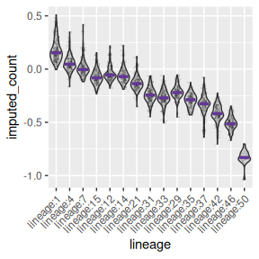
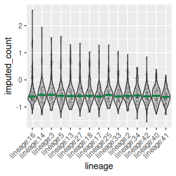

Simulation
simulation.rmdOverall requirements on running CYFER
Quick API map (what each function does)
-
lineage_cv(...)
K-fold CV over a decreasing λ-sequence produced bylineage_imputation_sequence(). For each fold, trains oncell_features[-fold]and evaluates the unpenalized objective on held-out cells (and on the train split). Returns a list (one per fold) with:-
train_fit: result fromlineage_imputation_sequence()(containsfit_list,lambda_sequence) -
train_loglik,test_loglik: vectors over λ (lower is better; this is the objective value, not a literal log-likelihood) - Optional checkpointing via
savefile_tmp.
-
-
lineage_cv_finalize(cell_features, cell_lineage, fit_res, lineage_future_count)
Picks λ by minimizing the median across folds oftest_loglikat each λ. Refits once on all data at the chosen λ, initializing at the corresponding coefficients from the first fold’s path. Returns:-
cell_imputed_score: per-cell log10(imputed count) (i.e.,log10(exp(xβ))) -
coefficient_vec, chosenlambda -
lineage_imputed_count: sum of imputed counts per lineage.
-
lineage_imputation_sequence(...)
Computes an initial λ via.compute_initial_parameters(), builds a decreasing λ-grid from that value to 0, then callslineage_imputation()for each λ (warm-started). Returnsfit_list(best run per λ) andlambda_sequence.-
lineage_imputation(...)
Core optimizer. Cleans inputs, ensures anIntercept, and runs BFGS on the objective/gradient (.lineage_objective,.lineage_gradient) from a set of provided inits plus several randomized inits. Returns:-
fit: best solution (minimal objective) withcoefficient_vec,objective_val, etc. -
res_list: all starts.
-
evaluate_loglikelihood(...)
Thin wrapper that runs.lineage_objective(...)after cleanup. Note: this returns the objective value (data term averaged over lineages, plus penalty iflambda>0), not a conventional log-likelihood.
Data & shape assumptions (to check before fitting)
-
cell_features: numeric matrix, rownames = cell IDs, colnames = feature names, no NAs. If no “Intercept” column, it’s added internally where needed. -
cell_lineage: factor/character vector of lengthnrow(cell_features), giving each cell’s lineage label. -
lineage_future_count: named numeric vector; names are lineage IDs. The code intersectsnames(lineage_future_count)with observed lineages and silently drops cells/lineages that aren’t shared. -
tab_mat,future_timepoint: numeric 2-column matrix where the rows are named and are of each lineage (which appeared in ). There are two columns, one for the number of cells in the current timepoint (corresponding to ). The other is the number of cells in the future timepoint (corresponding to ).
Objective optimized (brief math)
Let β be coefficients (ridge penalty excludes the intercept). Define
the per-cell number of predicted progenies from cell \(i\) in lineage \(\ell\) as \(s_i=\exp(x_i^\top \beta)\). Let \(L\) be the set of lineages and \(Y_\ell\) the future count
for lineage \(\ell\). The objective to
be minimized is \[
\frac{1}{|L|}\Big(\sum_i s_i \;-\; \sum_{\ell\in L} Y_\ell \log
\sum_{i\in\ell} s_i\Big)\;+\;\lambda\,\|\beta_{\setminus
\text{Intercept}}\|_2^2,
\] with analytic gradient implemented in
.lineage_gradient().
CV note: Validation compares unpenalized objectives on held-out cells (penalty set to 0 during evaluation) to assess generalization of the data term.
Priming simulation
library(multiomeFate)
data("priming_simulation", package = "multiomeFate")
priming_simulation$cell_features[1:5,1:5]
#> fastTopicCOCL2_1 fastTopicCOCL2_2 fastTopicCOCL2_3 fastTopicCOCL2_4
#> cell:1 -0.8179598 0.02240982 -0.1106094 -0.66861435
#> cell:2 1.0155892 -0.31934930 -0.3443518 -0.58763318
#> cell:3 1.0573658 -0.32589331 -0.3443518 0.27433725
#> cell:4 1.7019937 -0.27025714 -0.1094102 -0.22460944
#> cell:5 -0.1769124 -0.32589331 1.0865580 0.09678745
#> fastTopicCOCL2_5
#> cell:1 -0.30615968
#> cell:2 -0.45021257
#> cell:3 -0.45021257
#> cell:4 -0.03842152
#> cell:5 2.57059409
head(priming_simulation$cell_lineage)
#> [1] "lineage:33" "lineage:1" "lineage:15" "lineage:15" "lineage:37"
#> [6] "lineage:37"
head(priming_simulation$lineage_future_count)
#> lineage:1 lineage:4 lineage:7 lineage:15 lineage:12 lineage:14
#> 342 178 169 144 136 126
head(priming_simulation$tab_mat)
#> now future
#> lineage:1 221 342
#> lineage:4 154 178
#> lineage:7 162 169
#> lineage:15 169 144
#> lineage:12 149 136
#> lineage:14 144 126
set.seed(10)
fit_res <- multiomeFate:::lineage_cv(
cell_features = priming_simulation$cell_features,
cell_lineage = priming_simulation$cell_lineage,
future_timepoint = "future",
lineage_future_count = priming_simulation$lineage_future_count,
lambda_initial = 3,
lambda_sequence_length = 10,
tab_mat = priming_simulation$tab_mat,
num_folds = 2,
verbose = 2
)
#> [1] "Dropping fold #1 out of 2"
#> [1] "Dropping fold #2 out of 2"
final_fit <- multiomeFate:::lineage_cv_finalize(
cell_features = priming_simulation$cell_features,
cell_lineage = priming_simulation$cell_lineage,
fit_res = fit_res,
lineage_future_count = priming_simulation$lineage_future_count
)
names(final_fit)
#> [1] "cell_imputed_score" "coefficient_vec" "lambda"
#> [4] "lineage_imputed_count"
cell_imputed_score <- as.numeric(priming_simulation$cell_features %*% final_fit$coefficient_vec[-1]) + final_fit$coefficient_vec[1]
cell_imputed_score <- log10(exp(cell_imputed_score))
names(cell_imputed_score) <- rownames(priming_simulation$cell_features)
assigned_lineage <- priming_simulation$cell_lineage
names(assigned_lineage) <- rownames(priming_simulation$cell_features)
lineage_vec <- assigned_lineage[names(cell_imputed_score)]
tab_vec <- table(assigned_lineage)
lineage_sizes <- final_fit$lineage_imputed_count
lineage_names <- names(lineage_sizes)[order(lineage_sizes, decreasing = TRUE)]
# form data frame
df <- data.frame(lineage = factor(lineage_vec, levels = lineage_names),
imputed_count = cell_imputed_score)
col_vec <- rep("lightgray", length(lineage_names))
names(col_vec) <- lineage_names
plot1 <- ggplot2::ggplot(df, ggplot2::aes(x=lineage, y=imputed_count))
plot1 <- plot1 + ggplot2::geom_violin(trim=TRUE, scale = "width", ggplot2::aes(fill=lineage))
plot1 <- plot1 + ggplot2::scale_fill_manual(values = col_vec)
plot1 <- plot1 + ggplot2::geom_jitter(shape=16, position=ggplot2::position_jitter(0.2), alpha = 0.1, size = 0.5)
plot1 <- plot1 + Seurat::NoLegend()
plot1 <- plot1 + ggplot2::scale_x_discrete(limits = lineage_names,
guide = ggplot2::guide_axis(angle = 45))
plot1 <- plot1 + ggplot2::stat_summary(fun = median, geom = "crossbar",
width = 0.75, color = "#633895")
plot1
Plastic simulation
data("plastic_simulation")
set.seed(10)
fit_res <- multiomeFate:::lineage_cv(
cell_features = plastic_simulation$cell_features,
cell_lineage = plastic_simulation$cell_lineage,
future_timepoint = "future",
lineage_future_count = plastic_simulation$lineage_future_count,
lambda_initial = 3,
lambda_sequence_length = 10,
tab_mat = plastic_simulation$tab_mat,
num_folds = 2,
verbose = 2
)
#> [1] "Dropping fold #1 out of 2"
#> [1] "Dropping fold #2 out of 2"
final_fit <- multiomeFate:::lineage_cv_finalize(
cell_features = plastic_simulation$cell_features,
cell_lineage = plastic_simulation$cell_lineage,
fit_res = fit_res,
lineage_future_count = plastic_simulation$lineage_future_count
)
cell_imputed_score <- as.numeric(plastic_simulation$cell_features %*% final_fit$coefficient_vec[-1]) + final_fit$coefficient_vec[1]
cell_imputed_score <- log10(exp(cell_imputed_score))
names(cell_imputed_score) <- rownames(plastic_simulation$cell_features)
assigned_lineage <- plastic_simulation$cell_lineage
names(assigned_lineage) <- rownames(plastic_simulation$cell_features)
lineage_vec <- assigned_lineage[names(cell_imputed_score)]
tab_vec <- table(assigned_lineage)
lineage_sizes <- final_fit$lineage_imputed_count
lineage_names <- names(lineage_sizes)[order(lineage_sizes, decreasing = TRUE)]
# form data frame
df <- data.frame(lineage = factor(lineage_vec, levels = lineage_names),
imputed_count = cell_imputed_score)
col_vec <- rep("lightgray", length(lineage_names))
names(col_vec) <- lineage_names
plot1 <- ggplot2::ggplot(df, ggplot2::aes(x=lineage, y=imputed_count))
plot1 <- plot1 + ggplot2::geom_violin(trim=TRUE, scale = "width", ggplot2::aes(fill=lineage))
plot1 <- plot1 + ggplot2::scale_fill_manual(values = col_vec)
plot1 <- plot1 + ggplot2::geom_jitter(shape=16, position=ggplot2::position_jitter(0.2), alpha = 0.1, size = 0.5)
plot1 <- plot1 + Seurat::NoLegend()
plot1 <- plot1 + ggplot2::scale_x_discrete(limits = lineage_names,
guide = ggplot2::guide_axis(angle = 45))
plot1 <- plot1 + ggplot2::stat_summary(fun = median, geom = "crossbar",
width = 0.75, color = "#0D8242")
plot1